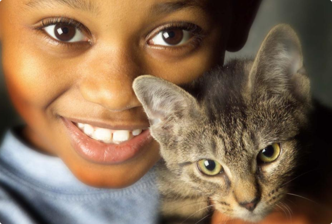

Unimos amigos dos animais e ONGs confiáveis para
garantir pets em lares seguros e amorosos, com
transparência e cuidado.
PETS PARA ADOÇÃO

Cobasi
Cheia de energia e amor para dar! Stella é leal, brincalhona e está pronta para alegrar sua casa. ❤️

AdotePetz
Amora é uma filhote cheia de energia e amor para dar! Adora brincar e se aconchegar no colo. Ideal para quem quer um amigo leal e carinhoso que vai alegrar todos os dias.

Cobasi
A Cotoca tem uma patinha amputada, mas não precisa de nenhum cuidado especial. Assim como os outros gatos, essa fêmea de 1 ano de idade, adora subir em lugares altos e é muito curiosa. A Cotoca tem o temperamento dócil e é carinhosa.

AdotePetz
Anila é uma pequena adorável, muito afetuosa e curiosa. Gosta de explorar e receber carinho. Perfeita para quem busca um bichinho brincalhão e cheio de fofura.
Cobasi
Zézinho é calmo, carinhoso e leal. Apesar de jovem, ele já sabe conquistar corações com seu jeito doce. Vai se dar bem em qualquer lar que ofereça amor e atenção.
AdotePetz
Billy é um cãozinho tranquilo e companheiro. Ele ama carinho e companhia, e adora passeios curtos. Ideal para famílias que querem um amigo leal e calmo.

Cobasi
Balu é cheio de energia e adora se divertir. Sociável com outros animais e pessoas, ele vai iluminar qualquer casa com sua presença. Um amigo ativo e brincalhão.

Adotar
Lina é charmosa e delicada. Gosta de receber carinho e é ótima companhia para momentos de relaxamento. Ideal para quem procura um pet doce e elegante.

Cobasi
Batatinha é uma fofura em forma de cachorro! Carinhosa e brincalhona, adora atenção e companhia. Vai se tornar uma amiga inseparável para toda a família.
VOCÊ SABIA?

Quando você adota um pet, o ambiente da casa deve ser preparado antes mesmo da chegada dele. Animais, especialmente cães e gatos, percebem cheiros e sons, e um espaço já familiarizado com objetos seguros ajuda a reduzir o estresse.
Pets adotados costumam criar laços profundos com seus tutores, muitas vezes demonstrando gratidão com gestos e comportamentos únicos.

Ao adotar de ONGs e protetores, você apoia o trabalho dessas pessoas que dedicam tempo e recursos para resgatar e cuidar de animais abandonados.
POR QUE VOCÊ DEVERIA CONFIAR EM NÓS?
Selo de parceiro
verificado.
Todos os parceiros passam por um processo de verificação antes de serem listados.
Transparência
Total.
Mostramos a reputação e o histórico de cada ONG e loja parceira.

Compromisso com o
Bem-estar.
Priorizamos parceiros que seguem boas práticas e cuidam dos animais com amor.

Avaliações
Reais.
Nossas notas são baseadas na experiência de usuários cadastrados.
NOSSOS PARCEIROS DE ADOÇÃO
Inst. Ampara Animal
Inst. Ampara Animal
Inst. Ampara Animal
Inst. Ampara Animal
Inst. Ampara Animal